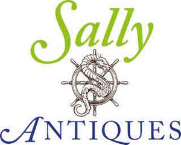

Trade Mark Journal No.2025/043 24 October 2025
UK00004274913 8 October 2025 (8,13,14,25,35,36,42)
Mark 1

Mark 2
- Class 8
- Bayonets [swords]; Sabres; Japanese swords; Sabres [sword]; Swords.
- Class 13
- Military rifles; Magazines for firearms; Magazines for weapons; Naval guns; Bandoliers for weapons; Pistols [firearms]; Firearms; Sporting firearms; Firearms (Ammunition for -); Ammunition for firearms; Hunting rifles [sporting rifles]; Gun scabbards; Silencers for firearms; Holders, holsters, magazines and cartridges, for weapons and ammunition; Armaments; Guns [weapons]; Javelins [weapons]; Tanks [weapons]; Mortars [firearms]; Mortars being firearms; Sporting rifles; Carbines; Hunting firearms; Breeches of firearms; Weapons and ammunition; Artillery guns; Stands for firearms; Rifles; Sporting guns; Muzzles for guns [weapons]; Weapons; Cartridge magazines for firearms; Tripods for firearms; Air rifles [weapons].
- Class 14
- Collectible coins; Commemorative medals; Decorative brooches [jewellery]; Medals; Items of jewellery; Jewellery items; Trinkets [jewellery]; Brooches [jewellery]; Jewellery brooches; Collectable monetary coin sets; Decorative articles [trinkets or jewellery] for personal use; Crucifixes as jewellery; Trinkets [jewellery, jewelry (Am.)]; Brooches [jewelry]; Jewelry brooches; Brooches being jewelry; Brooches [jewellery, jewelry (Am.)]; Silver objets d'art; Cloisonne jewellery; Medallions [jewellery, jewelry (Am.)]; Pewter jewellery.
- Class 25
- Martial arts uniforms; Military boots; Greatcoats.
- Class 35
- On-line auctioneering; On-line auctioneering services via the Internet; Carrying out auction sales; Advertising services relating to the sale of goods; On-line trading services in which seller posts products to be auctioned and bidding is done via the Internet.
- Class 36
- Valuations [appraisals] of antiques; Antique appraisal; Appraisal (Antique -); Appraisals [valuation] of antique; Antique appraisal services [valuation]; Appraisal (Jewellery [jewelry Am.] -); Jewellery [jewelry (Am.)] appraisal; Jewelry appraisal; Art appraisal; Appraisal (Art -); Numismatic appraisal; Appraisal (Numismatic -); Appraisals [valuation] of jewellery; Providing information relating to antique appraisal; Valuations [appraisals] of artworks; Jewellery appraisal; Art work valuations [appraisals]; Valuations [appraisals] of valuables; Numismatic appraisal services [valuation]; Jewellery appraisal [valuation].
- Class 42
- Authenticating antiques.
Jolly Antiques Ltd